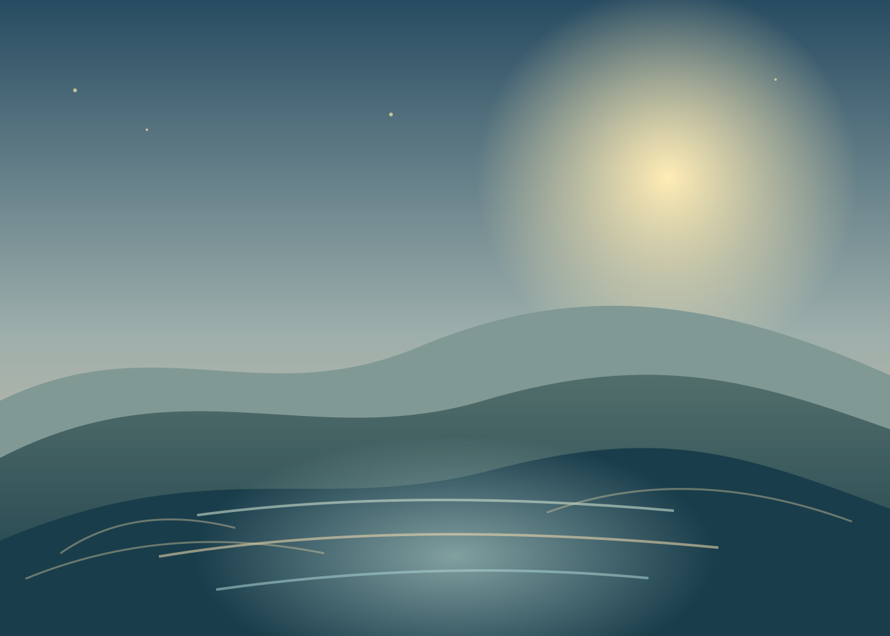

INTERACTIVE PREVIEW
Chat Composer Optics
Change scene
The controls stay readable while the scene continues behind them.
The input is a little window into the wallpaper.
Move the scene or send a message to watch the glass respond.
The centre stays usable; the edge catches the light.
♪
↗